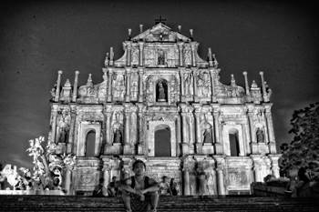

Fusion of European and Asian Influence
Macau, China
Summer 2010
Macau...where do I start? Let's see, Macau was actually not on my itinerary. I had no plans on visiting here but I am glad I did. Macau is by far the prettiest country in terms of architecture, in my opinion. I love the Portuguese influence on these buildings. The streets are narrow and there are actually cobblestone! I wish I had taken more architecture classes to describe better, but I don't really think words will do. You just have to go and experience yourself.
 Macau is
only an hour away from Hong Kong via ferry. The ride is really cheap
~$450 HKD which equates to about $30 USD for a round trip. The country
has its own currency but you can also use Hong Kong dollars. Since it's
a major destination for tourists as well as gamblers, the natives
command a strong fluency in English. I was really surprised that I did
just about everything in one day (~10 hours). I walked tirelessly
everywhere. I wouldn't say Macau is walkable but most of the attractions
are on the north island. The city is so pretty at night with the
casinos. The so-called "Vegas of Asia" truly lives up to its name. I
wished I was balling to play with these people, they all looked so cool!
Come to think of, I must have walked over 13 miles that day! I had even
crossed the Taipa Bridge to a whole different country! Not everything in
Macau resembles Europe, there are Buddhist temples and egg tarts
(Portugese version)! Everyone is so friendly. I remember getting lost
and asking a woman for directions in Chinese. It was really funny
because she didn't understand me so we can reverted back to sign
language.
Macau is
only an hour away from Hong Kong via ferry. The ride is really cheap
~$450 HKD which equates to about $30 USD for a round trip. The country
has its own currency but you can also use Hong Kong dollars. Since it's
a major destination for tourists as well as gamblers, the natives
command a strong fluency in English. I was really surprised that I did
just about everything in one day (~10 hours). I walked tirelessly
everywhere. I wouldn't say Macau is walkable but most of the attractions
are on the north island. The city is so pretty at night with the
casinos. The so-called "Vegas of Asia" truly lives up to its name. I
wished I was balling to play with these people, they all looked so cool!
Come to think of, I must have walked over 13 miles that day! I had even
crossed the Taipa Bridge to a whole different country! Not everything in
Macau resembles Europe, there are Buddhist temples and egg tarts
(Portugese version)! Everyone is so friendly. I remember getting lost
and asking a woman for directions in Chinese. It was really funny
because she didn't understand me so we can reverted back to sign
language.
The main attraction (and most famous landmark) in Macau, besides all the casinos, is the San Paulo Cathedral (enlisted as part of the UNESCO World Heritage Site Historic Centre). In the late 16th century, the cathedral was one of the largest Catholic churches in Asia. However, in early 19th century, a fire burned literally the whole church. I'm not sure if the fire kindly left the facade or it was rebuilt, but only the main facade remains. This place was truly remarkable. Too bad my stupid lens was not wide enough for me to capture its essence, this is why I think I should invest in a ultra-wide lens. I highly recommend this country to anyone who likes a combination of Europe and Asia with a little Vegas flavor. You will have a great time here, I promise! :)